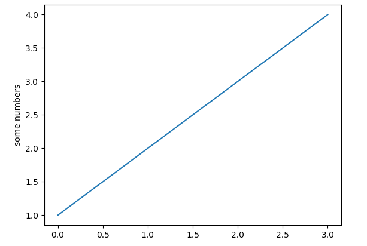
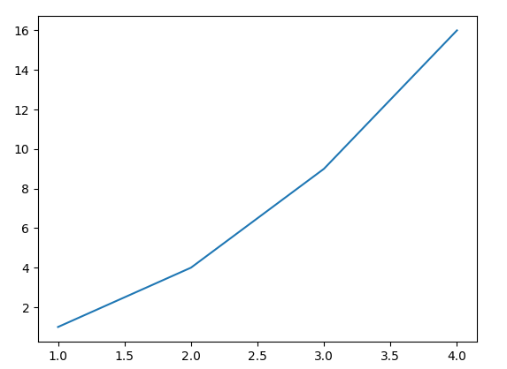
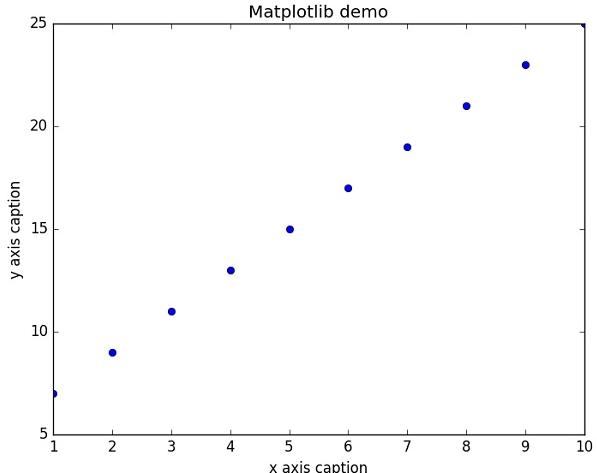

Table of Contents
- 1. 基本数据类型
- 2. 基本数据类型转换
- 3. 变量
- 4. 内置方法
- 5. 条件语句
- 6. 三元表达式
- 7. 参数
- 8. Python3 序列解包
- 9. 类
- 10. 模块与包
- 11. py文件的两种执行方式
- 12. numpy库
- 13.
__future__模块 - 14. argparse 库
- 15. torch
- 16. torchvision
- 17. os库
- 18. time库
- 19. 注释
- 20. 编码问题
- 21. namedtuple
- 22. 字典(Dictionary)
- 23. collections库
- 24. isinstance() 函数
- 25. format()用法
- 26. 字符串
- 27. pandas库
- 28. Matplotlib
- 29. Sklearn
1 基本数据类型
1.1 字符串
字符创用单引号 ‘ ‘ 、双引号 “ “ 、三引号 ‘‘‘ ‘‘‘ 表示
单引号可以嵌入到双引号和三引号，双引号可以嵌入到三引号里面
三引号可以用于表示分行的字符串
str2="a 'b' c" print(str2) str3='''he said:''hello'' ''' print(str3)
a 'b' c he said:''hello''
1.2 布尔值
python中可以直接用 True、False 表示布尔值（请注意大小写），也可以通过布尔运算计算出来。
1.3 空值
python中用None表示空值
1.4 列表
列表的数据项不需要具有相同的类型
创建一个列表，只要把逗号分隔的不同的数据项使用方括号括起来即可。如下所示：
list1 = ['physics', 'chemistry', 1997, 2000] list2 = [1, 2, 3, 4, 5 ] list3 = ["a", "b", "c", "d"]
1.4.1 Python列表脚本操作符
列表对 + 和 * 的操作符与字符串相似。+ 号用于组合列表，* 号用于重复列表。
如下所示：
| Python 表达式 | 结果 | 描述 |
|---|---|---|
| len([1, 2, 3]) | 3 | 长度 |
| [1, 2, 3] + [4, 5, 6] | [1, 2, 3, 4, 5, 6] | 组合 |
| ['Hi!'] * 4 | ['Hi!', 'Hi!', 'Hi!', 'Hi!'] | 重复 |
| 3 in [1, 2, 3] | True | 元素是否存在于列表中 |
| for x in [1, 2, 3]: print x, | 1 2 3 | 迭代 |
2 基本数据类型转换
Python 中基本数据类型转换的方法有下面几个。
| 方法 | 说明 |
|---|---|
| int(x [,base ]) | 将x转换为一个整数 |
| float(x ) | 将x转换到一个浮点数 |
| complex(real [,imag ]) | 创建一个复数 |
| str(x ) | 将对象 x 转换为字符串 |
| repr(x ) | 将对象 x 转换为表达式字符串 |
| eval(str ) | 用来计算在字符串中的有效 Python 表达式,并返回一个对象 |
| tuple(s ) | 将序列 s 转换为一个元组 |
| list(s ) | 将序列 s 转换为一个列表 |
| chr(x ) | 将一个整数转换为一个字符 |
| unichr(x ) | 将一个整数转换为 Unicode 字符 |
| ord(x ) | 将一个字符转换为它的整数值 |
| hex(x ) | 将一个整数转换为一个十六进制字符串 |
| oct(x ) | 将一个整数转换为一个八进制字符串 |
注：在 Python 3 里，只有一种整数类型 int，表示为长整型，没有 python2 中的 Long。
3 变量
Python 是不用声明数据类型的。在 Python 中 = 是赋值语句，跟其他的编程语言也是一样的，因为 Python 定义变量时不需要声明数据类型，因此可以把任意的数据类型赋值给变量，且同一个变量可以反复赋值，而且可以是不同的数据类型。
这种变量本身类型不固定的语言称之为动态语言，与之对应的是静态语言。静态语言在定义变量时必须指定变量类型，如果赋值的时候类型不匹配，就会报错。例如 Java 是静态语言。
3.1 变量的指向问题
这个跟c语言是一样的
a="hello python" b=a a=123 print(b)
hello python
3.2 多个变量赋值
Python 允许同时为多个变量赋值。例如：
a = b = c = 1
当然也可以为多个对象指定多个变量。例如：
a, b, c = 1, 2, "liangdianshui"
以上实例，两个整型对象 1 和 2 的分配给变量 a 和 b，字符串对象 "liangdianshui" 分配给变量 c。
4 内置方法
4.1 enumerate()
enumerate 函数用于遍历序列中的元素以及它们的下标
enumerate(sequence, [start=0])
4.1.1 参数
- sequence – 一个序列、迭代器或其他支持迭代对象。
- start – 下标起始位置。
4.1.2 返回值
返回 enumerate(枚举) 对象。
4.1.3 样例
>>>seasons = ['Spring', 'Summer', 'Fall', 'Winter'] >>> list(enumerate(seasons)) [(0, 'Spring'), (1, 'Summer'), (2, 'Fall'), (3, 'Winter')] >>> list(enumerate(seasons, start=1)) # 下标从 1 开始 [(1, 'Spring'), (2, 'Summer'), (3, 'Fall'), (4, 'Winter')]
>>>seq = ['one', 'two', 'three'] >>> for i, element in enumerate(seq): ... print i, element ... 0 one 1 two 2 three
4.2 open
python open() 函数用于打开一个文件，创建一个 file 对象，相关的方法才可以调用它进行读写。
open(name[, mode[, buffering]]) #示例 open(path, "r")
4.2.1 参数
- name : 一个包含了你要访问的文件名称的字符串值。
- mode : mode 决定了打开文件的模式：只读，写入，追加等。所有可取值见如下的完全列表。这个参数是非强制的，默认文件访问模式为只读(r)。
- buffering : 如果 buffering 的值被设为 0，就不会有寄存。如果 buffering 的值取 1，访问文件时会寄存行。如果将 buffering 的值设为大于 1 的整数，表明了这就是的寄存区的缓冲大小。如果取负值，寄存区的缓冲大小则为系统默认。
4.2.2 打开文件的模式
| 模式 | 描述 |
| r | 以只读方式打开文件。文件的指针将会放在文件的开头。这是默认模式。 |
| rb | 以二进制格式打开一个文件用于只读。文件指针将会放在文件的开头。这是默认模式。 |
| r+ | 打开一个文件用于读写。文件指针将会放在文件的开头。 |
| rb+ | 以二进制格式打开一个文件用于读写。文件指针将会放在文件的开头。 |
| w | 打开一个文件只用于写入。如果该文件已存在则打开文件，并从开头开始编辑，即原有内容会被删除。如果该文件不存在，创建新文件。 |
| wb | 以二进制格式打开一个文件只用于写入。如果该文件已存在则打开文件，并从开头开始编辑，即原有内容会被删除。如果该文件不存在，创建新文件。 |
| w+ | 打开一个文件用于读写。如果该文件已存在则打开文件，并从开头开始编辑，即原有内容会被删除。如果该文件不存在，创建新文件。 |
| wb+ | 以二进制格式打开一个文件用于读写。如果该文件已存在则打开文件，并从开头开始编辑，即原有内容会被删除。如果该文件不存在，创建新文件。 |
| a | 打开一个文件用于追加。如果该文件已存在，文件指针将会放在文件的结尾。也就是说，新的内容将会被写入到已有内容之后。如果该文件不存在，创建新文件进行写入。 |
| ab | 以二进制格式打开一个文件用于追加。如果该文件已存在，文件指针将会放在文件的结尾。也就是说，新的内容将会被写入到已有内容之后。如果该文件不存在，创建新文件进行写入。 |
| a+ | 打开一个文件用于读写。如果该文件已存在，文件指针将会放在文件的结尾。文件打开时会是追加模式。如果该文件不存在，创建新文件用于读写。 |
| ab+ | 以二进制格式打开一个文件用于追加。如果该文件已存在，文件指针将会放在文件的结尾。如果该文件不存在，创建新文件用于读写。 |
4.2.3 file 对象方法
- file.read([size])：size 未指定则返回整个文件，如果文件大小 >2 倍内存则有问题，f.read()读到文件尾时返回""(空字串)。
- file.readline()：返回一行。
- file.readlines([size]) ：返回包含size行的列表, size 未指定则返回全部行。
- for line in f: print line ：通过迭代器访问。
- f.write("hello\n")：如果要写入字符串以外的数据,先将他转换为字符串。
- f.tell()：返回一个整数,表示当前文件指针的位置(就是到文件头的比特数)。
- f.seek(偏移量,[起始位置])：用来移动文件指针。偏移量: 单位为比特，可正可负. 起始位置: 0 - 文件头, 默认值; 1 - 当前位置; 2 - 文件尾
- f.close() 关闭文件
4.3 print
打印 Hello Python ，注意必须加单引号
print ('hello python')
4.4 super()
super() 函数是用于调用父类(超类)的一个方法。
super(type[, object-or-type])
- type – 类。
- object-or-type – 类，一般是 self
Python3.x 和 Python2.x 的一个区别是: Python 3 可以使用直接使用 super().xxx 代替 super(Class, self).xxx :
#!/usr/bin/python # -*- coding: UTF-8 -*- class FooParent(object): def __init__(self): self.parent = 'I\'m the parent.' print ('Parent') def bar(self,message): print ("%s from Parent" % message) class FooChild(FooParent): def __init__(self): # super(FooChild,self) 首先找到 FooChild 的父类（就是类 FooParent），然后把类 FooChild 的对象转换为类 FooParent 的对象 super(FooChild,self).__init__() print ('Child') def bar(self,message): super(FooChild, self).bar(message) print ('Child bar fuction') print (self.parent) if __name__ == '__main__': fooChild = FooChild() fooChild.bar('HelloWorld')
执行结果：
Parent
Child
HelloWorld from Parent
Child bar fuction
I'm the parent.
5 条件语句
5.1 if
if(...):
comment...
6 三元表达式
a = 1 b = 2 h = "" #如果if后面的条件成立,则h=a-b,否则h=a+b h = a-b if a>b else a+b print(h)
7 参数
7.1 默认参数
def test_defargs(one, two = 2): print 'Required argument: ', one print 'Optional argument: ', two test_defargs(1) # result: # Required argument: 1 # Optional argument: 2 test_defargs(1, 3) # result: # Required argument: 1 # Optional argument: 3
7.2 可变参数
你可以将不定数量的参数传递给一个函数。不定的意思是：预先并不知道, 函数使用者会传递多少个参数给你, 所以在这个场景下使用这两个关键字。其实并不是必须写成 *args 和 **kwargs。 *(星号) 才是必须的. 你也可以写成 *ar 和 **k 。而写成 *args 和**kwargs 只是一个通俗的命名约定。
其中，*args是可变的positional arguments列表，**kwargs是可变的keyword arguments列表。并且，*args必须位于**kwargs之前，因为positional arguments必须位于keyword arguments之前。
*args表示任何多个无名参数，它本质是一个 tuple**kwargs表示关键字参数，它本质上是一个 dict
下面一个例子使用*args，同时包含一个必须的参数：
def test_args(first, *args): print 'Required argument: ', first for v in args: print 'Optional argument: ', v test_args(1, 2, 3, 4) # result: # Required argument: 1 # Optional argument: 2 # Optional argument: 3 # Optional argument: 4
下面一个例子使用 **kwargs, 同时包含一个必须的参数和*args列表：
def test_kwargs(first, *args, **kwargs): print 'Required argument: ', first for v in args: print 'Optional argument (*args): ', v for k, v in kwargs.items(): print 'Optional argument %s (*kwargs): %s' % (k, v) test_kwargs(1, 2, 3, 4, k1=5, k2=6) # results: # Required argument: 1 # Optional argument (*args): 2 # Optional argument (*args): 3 # Optional argument (*args): 4 # Optional argument k2 (*kwargs): 6 # Optional argument k1 (*kwargs): 5
*args 和 **kwargs 语法不仅可以在函数定义中使用，同样可以在函数调用的时候使用。不同的是，如果说在函数定义的位置使用*args和**kwargs是一个将参数pack的过程，那么在函数调用的时候就是一个将参数unpack的过程了。下面使用一个例子来加深理解：
def test_args(first, second, third, fourth, fifth): print('First argument: ', first) print('Second argument: ', second) print('Third argument: ', third) print('Fourth argument: ', fourth) print('Fifth argument: ', fifth) # Use *args args = [1, 2, 3, 4, 5] test_args(*args) # results: # First argument: 1 # Second argument: 2 # Third argument: 3 # Fourth argument: 4 # Fifth argument: 5 # Use **kwargs kwargs = { 'first': 1, #注意这里的first、second等等都要和函数定义里的参数名一样，否则会报错 'second': 2, 'third': 3, 'fourth': 4, 'fifth': 5 } test_args(**kwargs) # results: # First argument: 1 # Second argument: 2 # Third argument: 3 # Fourth argument: 4 # Fifth argument: 5
7.3 positional argument vs keyword argument
positional argument位置参数，是指用相对位置指代参数。关键字参数（keyword argument），见名知意使用关键字指代参数。
位置参数或者按顺序传递参数，或者使用名字，使用名字时，对顺序没有要求。
def fn(a, b, c=1): return a*b+c print(fn(1, 2)) # 3, positional(a, b) and default(c) print(fn(1, 2, 3)) # 5, positional(a, b) print(fn(c=5, b=2, a=2)) # 9, named(b=2, a=2) print(fn(c=5, 1, 2)) # syntax error print(fn(b=2, a=2)) # 5, named(b=2, a=2) and default print(fn(5, c=2, b=1)) # 7, positional(a), named(b). print(fn(8, b=0)) # 1, positional(a), named(b), default(c=1)
8 Python3 序列解包
序列解包是 Python 3.0 之后才有的语法。
8.1 序列解包
那什么是序列解包呢？先看一个例子：
> a, b, c = 1, 2, 3 > a 1 > b 2 > c 3
这种方法并不限于列表和元组，而是适用于任意序列类型（甚至包括字符串和字节序列）。只要赋值运算符左边的变量数目与序列中的元素数目相等，你都可以用这种方法将元素序列解包到另一组变量中。
可以利用 * 表达式获取单个变量中的多个元素，只要它的解释没有歧义即可。
* 获取的值默认为 list
获取剩余部分：
> a, b, *c = 0, 1, 2, 3 > a 0 > b 1 > c [2, 3]
获取中间部分：
> a, *b, c = 0, 1, 2, 3 > a 0 > b [1, 2] > c 3
如果左值比右值要多，那么带 * 的变量默认为空
> a, b, *c = 0, 1 > a 0 > b 1 > c [] > a, *b, c = 0, 1 > a 0 > b [] > c 1
嵌套解包:
> (a, b), (c, d) = (1, 2), (3, 4) > a 1 > b 2 > c 3 > d 4 > a, b, c, d (1, 2, 3, 4)
8.2 实战例子
假如一个字符串 'ABCDEFGH'，要输出下列格式:
A ['B', 'C', 'D', 'E', 'F', 'G', 'H'] B ['C', 'D', 'E', 'F', 'G', 'H'] C ['D', 'E', 'F', 'G', 'H'] D ['E', 'F', 'G', 'H'] E ['F', 'G', 'H'] F ['G', 'H'] G ['H'] H []
一般处理过程：
> s = 'ABCDEFGH' > while s: x, s = s[0], list(s[1:]) print(x, s) A ['B', 'C', 'D', 'E', 'F', 'G', 'H'] B ['C', 'D', 'E', 'F', 'G', 'H'] C ['D', 'E', 'F', 'G', 'H'] D ['E', 'F', 'G', 'H'] E ['F', 'G', 'H'] F ['G', 'H'] G ['H'] H []
使用序列解包的方法：
> s = 'ABCDEFGH' > while s: x, *s = s print(x, s) A ['B', 'C', 'D', 'E', 'F', 'G', 'H'] B ['C', 'D', 'E', 'F', 'G', 'H'] C ['D', 'E', 'F', 'G', 'H'] D ['E', 'F', 'G', 'H'] E ['F', 'G', 'H'] F ['G', 'H'] G ['H'] H []
9 类
Python的类提供了面向对象编程的所有标准特性：类继承机制允许多个基类，派生类可以覆盖它基类的任何方法，一个方法可以调用基类中相同名称的的方法。对象可以包含任意数量和类型的数据。和模块一样，类也拥有 Python 天然的动态特性：它们在运行时创建，可以在创建后修改。
9.1 类的定义
class Student(object): pass
(object)表示该类从哪个类继承下来的，Object类是所有类都会继承的类。
class MyClass:
"""A simple example class"""
i=12345
def f(self):
return 'hello world'
9.2 类对象
类对象支持两种操作：属性引用和实例化。
9.2.1 属性引用
属性引用的标准语法：obj.name,如：MyClass.i和MyClass.f
MyClass.__doc__这也是有效引用，将返回所属类的文档字符串: "A simple example class"
9.2.2 实例化
x=MyClass()
__init__ 是python中的一个内置方法，可以用来初始化类的状态，实际上就是为了能够给类传入参数。没有 __init__ ，就没办法给类传入参数了。
class Student(object): def __init__(self): #这个可以用来初始化类的状态，实例化时可以不用传入参数。 self.data=[]
class Student(object): def __inin__(self,name,score): self.name=name self.score=score
__init__方法的第一参数永远为self，表示类 实例 本身
定义了__init__方法，创建实例时就不能传入空的参数，必须传入与__init__匹配的参数，但是self不需要传，python解释器会自己添加。
student=Student("Hugh",99) #实例化
10 模块与包
10.1 模块简介
在 Python 中，一个 .py 文件就称之为一个模块（Module）
使用模块还可以避免函数名和变量名冲突。相同名字的函数和变量完全可以分别存在不同的模块中，因此，我们自己在编写模块时，不必考虑名字会与其他模块冲突。但是也要注意，尽量不要与内置函数名字冲突。
Python 本身就内置了很多非常有用的模块，比如我的 Python 安装目录是默认的安装目录，在 C:\Users\Administrator\AppData\Local\Programs\Python\Python36 ，然后找到 Lib 目录，就可以发现里面全部都是 .py 文件.这些 .py 文件就是模块了。
模块可以分为标准库模块和自定义模块，Lib 目录下的都是标准库模块
10.2 模块的使用
10.2.1 import
导入一个模块的方法我们使用的是 import 关键字，这样做是导入了这个模块.这里需要注意了，这样做只是导入了模块，并没有导入模块中具体的某个属性或方法的。
import 的语法基本如下：
import module1[, module2[,... moduleN]
一个模块只会被导入一次，不管你执行了多少次 import。这样可以防止导入模块被一遍又一遍地执行。
当我们使用 import 语句的时候，Python 解释器会根据 Python 的搜索路径去寻找文件.
搜索路径是在 Python 编译或安装的时候确定的，安装新的库应该也会修改。搜索路径被存储在sys 模块中的 path 变量 。事实上，也可以通过定义环境变量的方式来确定搜索路径。
我们可以查一下路径：
#!/usr/bin/env python # -*- coding: UTF-8 -*- import sys print(sys.path)
10.2.2 from … import
from … import 可以直接导入某个模块中的属性和方法
语法如下:
直接导入某个模块中的属性和方法
10.2.3 * from ··· import *
这个语句可以把某个模块中的所有方法属性都导入。
#!/usr/bin/env python3 # -*- coding: UTF-8 -*- from sys import * print(version) print(executable)
11 py文件的两种执行方式
一个python文件通常有两种使用方法，第一是作为脚本直接执行，第二是 import 到其他的 python 脚本中被调用（模块重用）执行。
if __name__== 'main': 的作用就是控制这两种情况执行代码的过程，在 if __name__== 'main': 下的代码只有在第一种情况下（即文件作为脚本直接执行）才会被执行，而 import 到其他脚本中是不会被执行的。
- 直接执行

直接执行 test.py，结果如下图，可以成功 print 两行字符串。即， if __name__=="__main__": 语句之前和之后的代码都被执行。

- import 执行
然后在同一文件夹新建名称为 import_test.py 的脚本，输入如下代码：

执行 import_test.py 脚本，输出结果如下：

只输出了第一行字符串。即， if __name__=="__main__": 之前的语句被执行，之后的没有被执行。
11.1 if __name__ == '__main__': 的运行原理
每个python模块（python文件，也就是此处的 test.py 和 import_test.py）都包含内置的变量 __name__ ，当该模块被直接执行的时候， __name__ 等于文件名（包含后缀 .py ）；如果该模块 import 到其他模块中，则该模块的 __name__ 等于模块名称（不包含后缀.py）。
而 __main__ 始终指当前执行模块的名称（包含后缀.py）。进而当模块被直接执行时， __name__ == 'main' 结果为真。
为了进一步说明，我们在 test.py 脚本的 if name__=="__main": 之前加入 print(name)，即将 name 打印出来。文件内容和结果如下：


可以看出，此时变量__name__的值为"main"。
再执行 import_test.py，执行结果如下：


此时，test.py中的__name__变量值为 test，不满足 name__=="__main" 的条件，因此，无法执行其后的代码。
12 numpy库
12.1 numpy.fromfile
由一个text或者binary文件创建数组
numpy.fromfile(file, dtype=float, count=-1, sep='', offset=0)
- file : file or str or Path Open file object or filename.
- dtype : data-type Data type of the returned array. For binary files, it is used to determine the size and byte-order of the items in the file.
- count : int Number of items to read. `-1` means all items (i.e., the complete file).
- sep : str Separator between items if file is a text file. Empty (“”) separator means the file should be treated as binary. Spaces (” “) in the separator match zero or more whitespace characters. A separator consisting only of spaces must match at least one whitespace.
- offset : int The offset (in bytes) from the file’s current position. Defaults to 0. Only permitted for binary files.
13 __future__ 模块
from future import division 导入python未来支持的语言特征division(精确除法)，当我们没有在程序中导入该特征时，""操作符执行的是截断除法(Truncating Division),当我们导入精确除法之后，""执行的是精确除法，如下所示：
>>> 3/4 0 >>> from __future__ import division >>> 3/4 0.75
导入精确除法后，若要执行截断除法，可以使用"//"操作符：
>>> 3//4 0 >>>
一些将来特征如下：
| feature | optional in | mandatory in | effect |
|---|---|---|---|
| nested_scopes | 2.1.0b1 | 2.2 | PEP 227: Statically Nested Scopes |
| generators | 2.2.0a1 | 2.3 | PEP 255: Simple Generators |
| division | 2.2.0a2 | 3.0 | PEP 238: Changing the Division Operator |
| absolute_import | 2.5.0a1 | 2.7 | PEP 328: Imports: Multi-Line and Absolute/Relative |
| with_statement | 2.5.0a1 | 2.6 | PEP 343: The “with” Statement |
| print_function | 2.6.0a2 | 3.0 | PEP 3105: Make print a function |
| unicode_literals | 2.6.0a2 | 3.0 | PEP 3112: Bytes literals in Python 3000 |
PEP：Python Enhancement Proposals
可以在这个地方找到很多PEP：http://www.python.org/dev/peps/ 里面还能看到许多提议的动机
14 argparse 库
argparse是python的一个命令行解析包.argparse 模块可以让人轻松编写用户友好的命令行接口。程序定义它需要的参数，然后 argparse 将弄清如何从 sys.argv 解析出那些参数。 argparse 模块还会自动生成帮助和使用手册，并在用户给程序传入无效参数时报出错误信息。 官方中文文档
14.1 使用示例1
我们常常可以把argparse的使用简化成下面四个步骤
- import argparse
- parser = argparse.ArgumentParser()
- parser.add_argument()
- parser.parse_args()
上面四个步骤解释如下：首先导入该模块；然后创建一个解析对象；然后向该对象中添加你要关注的命令行参数和选项，每一个add_argument方法对应一个你要关注的参数或选项；最后调用parse_args()方法进行解析；解析成功之后即可使用。
以下代码是一个 Python 程序，它获取一个整数列表并计算总和或者最大值：
import argparse parser = argparse.ArgumentParser(description='Process some integers.') parser.add_argument('integers', metavar='N', type=int, nargs='+', help='an integer for the accumulator') parser.add_argument('--sum', dest='accumulate', action='store_const', const=sum, default=max, help='sum the integers (default: find the max)') args = parser.parse_args() print(args.accumulate(args.integers))
假设上面的 Python 代码保存在名为 prog.py 的文件中，它可以在命令行运行并提供有用的帮助消息：
$ python prog.py -h usage: prog.py [-h] [--sum] N [N ...] Process some integers. positional arguments: N an integer for the accumulator optional arguments: -h, --help show this help message and exit --sum sum the integers (default: find the max)
当使用适当的参数运行时，它会输出命令行传入整数的总和或者最大值：
$ python prog.py 1 2 3 4 4 $ python prog.py 1 2 3 4 --sum 10
如果传入无效参数，则会报出错误：
$ python prog.py a b c
usage: prog.py [-h] [--sum] N [N ...]
prog.py: error: argument N: invalid int value: 'a'
14.2 使用示例2
下面是采用argparse从命令行获取用户名，该python的文件名为： fun_test.py
import argparse def main(): parser = argparse.ArgumentParser(description="Demo of argparse") parser.add_argument('-n','--name', default=' Li ') parser.add_argument('-y','--year', default='20') args = parser.parse_args() print(args) name = args.name year = args.year print('Hello {} {}'.format(name,year)) if __name__ == '__main__': main()
在终端执行命令:
python fun_test.py
结果如下：
Namespace(name=' Li ', year='20') Hello Li 20
在上面的代码中，我们先导入了 argparse 这个包，然后包中的 ArgumentParser 类生成一个 parser 对象（好多博客中把这个叫做参数解析器），其中的 description 描述这个参数解析器是干什么的，当我们在命令行显示帮助信息的时候会看到 description 描述的信息。
接着我们通过对象的 add_argument 函数来增加参数。这里我们增加了两个参数 name 和 year ，其中 -n,--name 表示同一个参数，~default~ 参数表示我们在运行命令时若没有提供参数，程序会将此值当做参数值。
最后采用对象的 parse_args 获取解析的参数，由上图可以看到， Namespace 中有两个属性（也叫成员）这里要注意个问题，当 - 和 -- 同时出现的时候，系统默认后者为参数名，前者不是，但是在命令行输入的时候没有这个区分接下来就是打印参数信息了。
当执行命令：
python fun_test.py -n chen --year 25
结果如下：
Namespace(name='chen', year='25') Hello chen 25
当执行命令 python fun_test.py -h 可以查看帮助信息
usage: fun_test.py [-h] [-n NAME] [-y YEAR] Demo of argparse optional arguments: -h, --help show this help message and exit -n NAME, --name NAME -y YEAR, --year YEAR
14.3 ArgumentParser对象
创建一个ArgumentParser对象
ArgumentParser(prog=None, usage=None, description=None, epilog=None, parents=[], formatter_class=argparse.HelpFormatter, prefix_chars='-', fromfile_prefix_chars=None, argument_default=None, conflict_handler='error', add_help=True, allow_abbrev=True)
14.3.1 参数
- prog - 程序的名称（默认：sys.argv[0]）
- usage - 描述程序用途的字符串（默认值：从添加到解析器的参数生成）
- description - 在参数帮助文档之前显示的文本（默认值：无）
- epilog - 在参数帮助文档之后显示的文本（默认值：无）
- parents - 一个 ArgumentParser 对象的列表，它们的参数也应包含在内
- formatter_class - 用于自定义帮助文档输出格式的类
- prefix_chars - 可选参数的前缀字符集合（默认值：'-'）
- fromfile_prefix_chars - 当需要从文件中读取其他参数时，用于标识文件名的前缀字符集合（默认值：None）
- argument_default - 参数的全局默认值（默认值： None）
- conflict_handler - 解决冲突选项的策略（通常是不必要的）
- add_help - 为解析器添加一个 -h/–help 选项（默认值： True）
- allow_abbrev - 如果缩写是无歧义的，则允许缩写长选项 （默认值：True）
14.4 add_argument()
定义单个的命令行参数应当如何解析。给一个 ArgumentParser 添加程序参数信息是通过调用 add_argument() 方法完成的。
add_argument(name or flags...[, action][, nargs][, const][, default][, type][, choices][, required][, help][, metavar][, dest])
14.4.1 参数
- name or flags - Either a name or a list of option strings, e.g. foo or -f, –foo.
- action - The basic type of action to be taken when this argument is encountered at the command line.
- nargs - The number of command-line arguments that should be consumed.
- const - A constant value required by some action and nargs selections.
- default - The value produced if the argument is absent from the command line.
- type - The type to which the command-line argument should be converted.
- choices - A container of the allowable values for the argument.
- required - Whether or not the command-line option may be omitted (optionals only).
- help - A brief description of what the argument does.
- metavar - A name for the argument in usage messages.
- dest - The name of the attribute to be added to the object returned by parse_args().
14.4.2 metavar的作用
用于设定在帮助中显示的内容.如下面所示，设定metavar后，打开帮助时，会显示metavar设定的内容
> import argparse > parser = argparse.ArgumentParser() > parser.add_argument('--foo',metavar='YYY') > parser.add_argument('--o') > parser.print_help() usage: [-h] [--foo YYY] [--o O] optional arguments: -h, --help show this help message and exit --foo YYY --o O
14.4.3 choices的作用
限制参数的取值范围。
Some command-line arguments should be selected from a restricted set of values. These can be handled by passing a container object as the choices keyword argument to add_argument() . When the command line is parsed, argument values will be checked, and an error message will be displayed if the argument was not one of the acceptable values:
>>> parser = argparse.ArgumentParser(prog='game.py') >>> parser.add_argument('move', choices=['rock', 'paper', 'scissors']) >>> parser.parse_args(['rock']) Namespace(move='rock') >>> parser.parse_args(['fire']) usage: game.py [-h] {rock,paper,scissors} game.py: error: argument move: invalid choice: 'fire' (choose from 'rock', 'paper', 'scissors')
检查完 type 后会检查 choices
Note that inclusion in the choices container is checked after any type conversions have been performed, so the type of the objects in the choices container should match the type specified:
>>> parser = argparse.ArgumentParser(prog='doors.py') >>> parser.add_argument('door', type=int, choices=range(1, 4)) >>> print(parser.parse_args(['3'])) Namespace(door=3) >>> parser.parse_args(['4']) usage: doors.py [-h] {1,2,3} doors.py: error: argument door: invalid choice: 4 (choose from 1, 2, 3)
14.5 parse_args()
ArgumentParser 通过 parse_args() 方法解析参数。它将检查命令行，把每个参数转换为适当的类型然后调用相应的操作。将参数字符串转换为对象并分配namespace的属性
Convert argument strings to objects and assign them as attributes of the namespace. Return the populated namespace.
parse_args(args=None, namespace=None)
下面是 parse_args() 不加任何参数的结果
> parser = argparse.ArgumentParser(description="Demo of argparse") > parser.add_argument('-n','--name', default=' Li ') > parser.add_argument('-y','--year', default='20') > args = parser.parse_args() > print(args) Namespace(name=' Li ', year='20')
14.5.1 参数
- args - List of strings to parse. The default is taken from sys.argv.
- namespace - An object to take the attributes. The default is a new empty Namespace object.
14.5.2 Option value syntax
对参数赋值的多种方法
The parse_args() method supports several ways of specifying the value of an option (if it takes one). In the simplest case, the option and its value are passed as two separate arguments:
>>> parser = argparse.ArgumentParser(prog='PROG') >>> parser.add_argument('-x') >>> parser.add_argument('--foo') >>> parser.parse_args(['-x', 'X']) #这种方法要把参数和值放在括号[ ] 里面 Namespace(foo=None, x='X') >>> parser.parse_args(['--foo', 'FOO']) Namespace(foo='FOO', x=None)
For long options (options with names longer than a single character), the option and value can also be passed as a single command-line argument, using = to separate them:
>>> parser.parse_args(['--foo=FOO']) Namespace(foo='FOO', x=None)
For short options (options only one character long), the option and its value can be concatenated:
>>> parser.parse_args(['-xX']) Namespace(foo=None, x='X')
Several short options can be joined together, using only a single - prefix, as long as only the last option (or none of them) requires a value:
>>> parser = argparse.ArgumentParser(prog='PROG') >>> parser.add_argument('-x', action='store_true') >>> parser.add_argument('-y', action='store_true') >>> parser.add_argument('-z') >>> parser.parse_args(['-xyzZ']) #只有最后的z会赋值为Z Namespace(x=True, y=True, z='Z')
14.5.3 Invalid arguments
While parsing the command line, parse_args() checks for a variety of errors, including ambiguous options, invalid types, invalid options, wrong number of positional arguments, etc. When it encounters such an error, it exits and prints the error along with a usage message:
>>> parser = argparse.ArgumentParser(prog='PROG') >>> parser.add_argument('--foo', type=int) >>> parser.add_argument('bar', nargs='?') >>> # invalid type >>> parser.parse_args(['--foo', 'spam']) usage: PROG [-h] [--foo FOO] [bar] PROG: error: argument --foo: invalid int value: 'spam' >>> # invalid option >>> parser.parse_args(['--bar']) usage: PROG [-h] [--foo FOO] [bar] PROG: error: no such option: --bar >>> # wrong number of arguments >>> parser.parse_args(['spam', 'badger']) usage: PROG [-h] [--foo FOO] [bar] PROG: error: extra arguments found: badger
14.5.4 Arguments containing -
参数名称包含-，即-x可以表示可选参数x，也可以表示位置参数-x;
The parse_args() method attempts to give errors whenever the user has clearly made a mistake, but some situations are inherently ambiguous. For example, the command-line argument -1 could either be an attempt to specify an option or an attempt to provide a positional argument. The parse_args() method is cautious here: positional arguments may only begin with - if they look like negative numbers and there are no options in the parser that look like negative numbers:
>>> parser = argparse.ArgumentParser(prog='PROG') >>> parser.add_argument('-x') >>> parser.add_argument('foo', nargs='?') >>> # no negative number options, so -1 is a positional argument >>> parser.parse_args(['-x', '-1']) Namespace(foo=None, x='-1') >>> # no negative number options, so -1 and -5 are positional arguments >>> parser.parse_args(['-x', '-1', '-5']) Namespace(foo='-5', x='-1') >>> parser = argparse.ArgumentParser(prog='PROG') >>> parser.add_argument('-1', dest='one') >>> parser.add_argument('foo', nargs='?') >>> # negative number options present, so -1 is an option >>> parser.parse_args(['-1', 'X']) Namespace(foo=None, one='X') >>> # negative number options present, so -2 is an option >>> parser.parse_args(['-2']) usage: PROG [-h] [-1 ONE] [foo] PROG: error: no such option: -2 >>> # negative number options present, so both -1s are options >>> parser.parse_args(['-1', '-1']) usage: PROG [-h] [-1 ONE] [foo] PROG: error: argument -1: expected one argument
If you have positional arguments that must begin with - and don’t look like negative numbers, you can insert the pseudo-argument '–' which tells parse_args() that everything after that is a positional argument:
>>> parser.parse_args(['--', '-f']) Namespace(foo='-f', one=None)
14.5.5 Argument abbreviations (prefix matching)¶
The parse_args() method by default allows long options to be abbreviated to a prefix, if the abbreviation is unambiguous (the prefix matches a unique option):
>>> parser = argparse.ArgumentParser(prog='PROG') >>> parser.add_argument('-bacon') >>> parser.add_argument('-badger') >>> parser.parse_args('-bac MMM'.split()) #前缀bac可以对应参数bacon Namespace(bacon='MMM', badger=None) >>> parser.parse_args('-bad WOOD'.split()) #前缀bad对应参数badger Namespace(bacon=None, badger='WOOD') >>> parser.parse_args('-ba BA'.split()) #发生错误，因为前缀ba可以对应bacon，也可对应badger usage: PROG [-h] [-bacon BACON] [-badger BADGER] PROG: error: ambiguous option: -ba could match -badger, -bacon
An error is produced for arguments that could produce more than one options. This feature can be disabled by setting allow_abbrev to False.
15 torch
15.1 torch.Tensor
torch.Tensor是一种包含单一数据类型元素的多维矩阵。torch.Tensor是默认的tensor类型（torch.FlaotTensor）的简称。
15.1.1 张量数据类型
Torch定义了九种CPU tensor类型和九种GPU tensor类型：
| Data type | dtype | CPU tensor | GPU tensor |
|---|---|---|---|
| 32-bit floating point | torch.float32 or torch.float | torch.FloatTensor | torch.cuda.FloatTensor |
| 64-bit floating point | torch.float64 or torch.double | torch.DoubleTensor | torch.cuda.DoubleTensor |
| 16-bit floating point | torch.float16 or torch.half | torch.HalfTensor | torch.cuda.HalfTensor |
| 8-bit integer (unsigned) | torch.uint8 | torch.ByteTensor | torch.cuda.ByteTensor |
| 8-bit integer (signed) | torch.int8 | torch.CharTensor | torch.cuda.CharTensor |
| 16-bit integer (signed) | torch.int16 or torch.short | torch.ShortTensor | torch.cuda.ShortTensor |
| 32-bit integer (signed) | torch.int32 or torch.int | torch.IntTensor | torch.cuda.IntTensor |
| 64-bit integer (signed) | torch.int64 or torch.long | torch.LongTensor | torch.cuda.LongTensor |
| Boolean | torch.bool | torch.BoolTensor | torch.cuda.BoolTensor |
15.1.2 创建张量
torch.tensor() 始终复制data。 如果您具有张量data，而只想更改其requires_grad标志，请使用 requires_grad_() 或 detach() 以避免复制。 如果您有一个 numpy 数组并且想要避免复制，请使用 torch.as_tensor() 。
#可以通过python列表或np数组创建张量 >>> torch.tensor([[1., -1.], [1., -1.]]) tensor([[ 1.0000, -1.0000], [ 1.0000, -1.0000]]) >>> torch.tensor(np.array([[1, 2, 3], [4, 5, 6]])) tensor([[ 1, 2, 3], [ 4, 5, 6]])
可以通过将 torch.dtype 和 torch.device 传递给构造函数或张量创建操作来构造特定数据类型的张量：
>>> torch.zeros([2, 4], dtype=torch.int32) tensor([[ 0, 0, 0, 0], [ 0, 0, 0, 0]], dtype=torch.int32) >>> cuda0 = torch.device('cuda:0') >>> torch.ones([2, 4], dtype=torch.float64, device=cuda0) tensor([[ 1.0000, 1.0000, 1.0000, 1.0000], [ 1.0000, 1.0000, 1.0000, 1.0000]], dtype=torch.float64, device='cuda:0')
15.1.3 访问张量
张量的内容可以使用 Python 的索引和切片符号来访问和修改：
>>> x = torch.tensor([[1, 2, 3], [4, 5, 6]]) >>> print(x[1][2]) tensor(6) >>> x[0][1] = 8 >>> print(x) tensor([[ 1, 8, 3], [ 4, 5, 6]])
使用 torch.Tensor.item() 从张量中获取包含单个值的 Python 数字：
>>> x = torch.tensor([[1]]) >>> x tensor([[ 1]]) >>> x.item() 1 >>> x = torch.tensor(2.5) >>> x tensor(2.5000) >>> x.item() 2.5
15.2 torch.device
torch.device代表将torch.Tensor分配到的设备的对象。
torch.device包含一个设备类型（'cpu'or'cuda'）和可选的设备的序号。如果设备序号不存在，则为当前设备.
一个 torch.Tensor=的设备可以通过 =Tensor.device 访问。
torch.device 可以通过字符串或字符串和设备编号构造.
通过字符串：
>>> torch.device('cuda:0') device(type='cuda', index=0) >>> torch.device('cpu') device(type='cpu') >>> torch.device('cuda') # current cuda device device(type='cuda')
通过字符串和设备编号构造:
>>> torch.device('cuda', 0) device(type='cuda', index=0) >>> torch.device('cpu', 0) device(type='cpu', index=0)
15.3 torch.utils.data
15.3.1 torch.utils.data.DataLoader
PyTorch中数据读取的一个重要接口是torch.utils.data.DataLoader，该接口定义在dataloader.py脚本中，只要是用PyTorch来训练模型基本都会用到该接口，该接口主要用来将自定义的数据读取接口的输出或者PyTorch已有的数据读取接口的输入按照batch size封装成Tensor，后续只需要再包装成Variable即可作为模型的输入，因此该接口有点承上启下的作用，比较重要。
class torch.utils.data.DataLoader(dataset, batch_size=1, shuffle=False, sampler=None, num_workers=0, collate_fn=<function default_collate>, pin_memory=False, drop_last=False)
- 参数
- dataset (Dataset) 加载数据的数据集。这个就是PyTorch已有的数据读取接口（比如torchvision.datasets.ImageFolder）或者自定义的数据接口的输出，该输出要么是torch.utils.data.Dataset类的对象，要么是继承自torch.utils.data.Dataset类的自定义类的对象。
- batch_size (int, optional) – 每个batch加载多少个样本(默认: 1)。
- shuffle (bool, optional) – 设置为True时会在每个epoch重新打乱数据(默认: False).
- sampler (Sampler, optional) – 定义从数据集中提取样本的策略。如果指定，则忽略shuffle参数。
- num_workers (int, optional) – 用多少个子进程加载数据。0表示数据将在主进程中加载(默认: 0)
- collate_fn (callable, optional) – 用来处理不同情况下的输入dataset的封装，一般采用默认即可，除非你自定义的数据读取输出非常少见。
- pin_memory (bool, optional) – If True, the data loader will copy tensors into CUDA pinned memory before returning them
- drop_last (bool, optional) – 如果数据集大小不能被batch size整除，则设置为True后可删除最后一个不完整的batch。如果设为False并且数据集的大小不能被batch size整除，则最后一个batch将更小。(默认: False)
15.3.2 ImageFolder
ImageFolder(root,transform=None,target_transform=None,loader=default_loader)
root : 在指定的root路径下面寻找图片 transform: 对PIL Image进行转换操作,transform 输入是loader读取图片返回的对象 target_transform :对label进行变换 loader: 指定加载图片的函数，默认操作是读取PIL image对象
15.4 torch.optim
torch.optim 是一个实现了各种优化算法的库。大部分常用的方法得到支持，并且接口具备足够的通用性，使得未来能够集成更加复杂的方法。
为了使用torch.optim，你需要构建一个optimizer对象。这个对象能够保持当前参数状态并基于计算得到的梯度进行参数更新。
15.4.1 构建
为了构建一个Optimizer，你需要给它一个包含了需要优化的参数（必须都是Variable对象）的iterable。然后，你可以设置optimizer的参 数选项，比如学习率，权重衰减，等等。 例子：
optimizer = optim.SGD(model.parameters(), lr=0.01, momentum=0.9) optimizer = optim.Adam([var1, var2], lr=0.0001)
如果您需要通过.cuda（）将模型移至GPU，请在为它构建优化器之前执行此操作。 .cuda（）之后的模型参数将与调用之前的对象不同。 通常，在构造和使用优化器时，应确保优化的参数位于一致的位置
15.4.2 为每个参数单独设置选项
Optimizer也支持为每个参数单独设置选项。若想这么做，不要直接传入Variable的iterable，而是传入dict的iterable。每一个dict都分别定 义了一组参数，并且包含一个param键，这个键对应参数的列表。其他的键应该optimizer所接受的其他参数的关键字相匹配，并且会被用于对这组参数的 优化。
例如，当我们想指定每一层的学习率时，这是非常有用的：
optim.SGD([
{'params': model.base.parameters()},
{'params': model.classifier.parameters(), 'lr': 1e-3}
], lr=1e-2, momentum=0.9)
这意味着model.base的参数将会使用1e-2的学习率，model.classifier的参数将会使用1e-3的学习率，并且0.9的momentum将会被用于所 有的参数。
15.4.3 进行单次优化
所有的optimizer都实现了step()方法，这个方法会更新所有的参数。它能按两种方式来使用：
optimizer.step()
这是大多数optimizer所支持的简化版本。一旦梯度被如backward()之类的函数计算好后，我们就可以调用这个函数。
for input, target in dataset: optimizer.zero_grad() output = model(input) loss = loss_fn(output, target) loss.backward() optimizer.step()
optimizer.step(closure)
一些优化算法例如Conjugate Gradient和LBFGS需要重复多次计算函数，因此你需要传入一个闭包(closure)去允许它们重新计算你的模型。这个闭包(closure)应当清空梯度， 计算损失，然后返回。
for input, target in dataset: def closure(): optimizer.zero_grad() output = model(input) loss = loss_fn(output, target) loss.backward() return loss optimizer.step(closure)
15.4.4 各种优化算法
15.4.5 调整学习率
torch.optim.lr_scheduler 提供了多种通过迭代次数调整学习率的方法。 torch.optim.lr_scheduler.ReduceLROnPlateau 允许基于某种衡量方法动态调整学习率。
学习率调整应该在优化更新后使用，例如，你应该用下列的方式写代码：
>>> scheduler = ...
>>> for epoch in range(100):
>>> train(...)
>>> validate(...)
>>> scheduler.step()
15.5 view的用法
相当于numpy中resize（）的功能，但是用法可能不太一样。把原先tensor中的数据按照行优先的顺序排成一个一维的数据（这里应该是因为要求地址是连续存储的），然后按照参数组合成其他维度的tensor。比如说是不管你原先的数据是[[[1,2,3],[4,5,6]]]还是[1,2,3,4,5,6]，因为它们排成一维向量都是6个元素，所以只要view后面的参数一致，得到的结果都是一样的。比如，
a=torch.Tensor([[[1,2,3],[4,5,6]]]) b=torch.Tensor([1,2,3,4,5,6]) print(a.view(1,6)) print(b.view(1,6))
得到的结果都是 tensor([[1., 2., 3., 4., 5., 6.])
再看一个例子：
a=torch.Tensor([[[1,2,3],[4,5,6]]]) print(a.view(3,2))
将会得到：
tensor([[1., 2.],
[3., 4.],
[5., 6.]])
相当于就是从1，2，3，4，5，6顺序的拿数组来填充需要的形状。但是如果您想得到如下的结果：
tensor([[1., 4.],
[2., 5.],
[3., 6.]])
就需要使用另一个函数了：permute（）
15.6 permute的用法
permute(dims) 将tensor的维度换位。
参数：参数是一系列的整数，代表原来张量的维度。比如三维就有0，1，2这些dimension。
16 torchvision
torchvision包是服务于pytorch深度学习框架的,用来生成图片,视频数据集,和一些流行的模型类和预训练模型. 中文文档、英文文档
torchvision由以下四个部分组成:
- torchvision.datasets : Data loaders for popular vision datasets
- torchvision.models : Definitions for popular model architectures, such as AlexNet, VGG, and ResNet and pre-trained models.
- torchvision.transforms : Common image transformations such as random crop, rotations etc.
- torchvision.utils : Useful stuff such as saving tensor (3 x H x W) as image to disk, given a mini-batch creating a grid of images, etc.
16.1 torchvision.datasets
torchvision.datasets 中包含了以下数据集
- MNIST
- Fashion-MNIST
- KMNIST
- EMNIST
- QMNIST
- FakeData
- COCO
- Captions
- Detection
- LSUN
- ImageFolder
- DatasetFolder
- ImageNet
- CIFAR
- STL10
- SVHN
- PhotoTour
- SBU
- Flickr
- VOC
- Cityscapes
- SBD
- USPS
- Kinetics-400
- HMDB51
- UCF101
- CelebA
由于以上Datasets都是 torch.utils.data.Dataset 的子类，所以，他们也可以通过 torch.utils.data.DataLoader 使用多线程（python的多进程）。例如：
imagenet_data = torchvision.datasets.ImageNet('path/to/imagenet_root/') data_loader = torch.utils.data.DataLoader(imagenet_data, batch_size=4, shuffle=True, num_workers=args.nThreads)
所有datasets都有相似的API。它们都有两个相同的参数： transform 和 target_transform
- transform： 一个函数，原始图片作为输入，返回一个转换后的图片。
- target_transform - 一个函数，输入为target，输出对其的转换
16.1.1 MNIST
torchvision.datasets.MNIST(root, train=True, transform=None, target_transform=None, download=False)
- root (string) – Root directory of dataset where MNIST/processed/training.pt and MNIST/processed/test.pt exist.
- train (bool, optional) – If True, creates dataset from training.pt, otherwise from test.pt.
- download (bool, optional) – If true, downloads the dataset from the internet and puts it in root directory. If - dataset is already downloaded, it is not downloaded again.
- transform (callable, optional) – A function/transform that takes in an PIL image and returns a transformed version. E.g, transforms.RandomCrop
- target_transform (callable, optional) – A function/transform that takes in the target and transforms it.
17 os库
os 是python标准库. os 顾名思义，就是与操作系统相关的标准库。如：文件，目录，执行系统命令等。
17.1 path子模块
涉及与磁盘文件操作，最常使用的当属 path 模块了。path 是 os 的子模块，可以通过 from os import path 使用，也可以直接通过 os.path 属性的方式使用。本文，为了保持一致性，统一采用后者的书写形式。
17.1.1 exists(path)
检测文件或目录是否存在。存在返回 True , 不存在返回 False 。
os.path.exists("dog.jpeg") True
17.1.2 isfile(path)
判断是否为文件。是返回 True， 不是返回 False。也可以用来判断文件是否存在。
os.path.isfile("dogs/") False
17.1.3 isdir(path)
判断是否为目录。是返回 True， 不是返回 False。也可以用来判断目录是否存在。
os.path.isdir("dogs/") True
17.1.4 basename(path)
返回不包含所在目录的文件名（含扩展）。
os.path.basename("dir1/dir2/file.ext") 'file.ext'
17.1.5 dirname(path)
返回文件所在目录。
os.path.dirname("dir1/dir2/file.ext") 'dir1/dir2'
17.1.6 split(path)
返回一个元组。元组第一个元素为文件所在目录，第二个元素为文件名（含扩展）。等效于 (dirname(path), basename(path))。
os.path.split("dir1/dir2/file.ext") ('dir1/dir2', 'file.ext')
17.1.7 splitext(path)
返回一个元组。元组第一个元素为文件所在目录和文件名（不含扩展），第二个元素为扩展名（包含 .）。常用来读取或更改文件扩展名。
os.path.splitext("dir1/dir2/file.ext") ('dir1/dir2/file', '.ext')
17.1.8 join(path, *paths)
将路径不同部分拼接成一个完整的路径。等效于 os.sep.join([path, *paths]) 。
os.path.join("dir1", "dir2", "file.ext") 'dir1/dir2/file.ext'
17.1.9 getsize(path)
返回文件大小。单位字节。
os.path.getsize("dog.jpeg")
18335
17.2 目录操作
17.2.1 listdir(path='.')
返回一个列表。列表为给定目录下所有文件和子目录，但不包含特殊目录 . 和 ..
默认为当前目录。
os.listdir("dogs")[:5] ['122.Pointer', '069.French_bulldog', '124.Poodle', '112.Nova_scotia_duck_tolling_retriever', '043.Canaan_dog']
17.2.2 mkdir(path, mode=0o777)
创建名为 path 的目录。并以数字形式指定目录权限，默认权限为 777 。
os.mkdir("newdir")
17.2.3 makedirs(name, mode=0o777, exist_ok=False)
递归方式创建路径为 path 的目录。并以数字形式指定目录权限，默认权限为 777 。可以看作功能更强大的 mkdir，它会自动创建叶子节点目录的所有上级目录，而 mkdir 必须在上级目录已经存在情况下，才能创建叶子节点的目录。
, exist_ok=True 是py3.2之后才有的写法,如果 exist_ok 为 False (默认值)，则如果目标目录已存在将引发 FileExistsError。
os.makedirs("parent/child/newdir")
17.2.4 rmdir(path)
删除目录。目录必须存在，并且只能删除空目录。不存在或不为空，都会异常。要想递归删除整个目录树，请使用 shutil.rmtree()。
os.rmdir("newdir")
17.2.5 removedirs(path)
递归删除目录。目录必须存在，并且只能删除空目录。不存在或不为空，都会异常。与 rmdir 不同的是，在删除了叶子节点目录后，会逐次删除上级目录，直到遇到不为空的目录。
os.removedirs("parent/child/newdir")
17.2.6 remove(path)
删除文件。不能删除目录，给定路径必须为文件，否则会异常。
Warm Suggestion: 以下复制文件的操作，推荐使用 shutil.copyfile。
# 复制文件 with open("dog.jpeg", "rb") as f: content = f.read() with open("dog.copy.jpeg", "wb") as f2: f2.write(content) # 删除文件 os.remove("dog.copy.jpeg")
18 time库
time库是Python中处理时间的标准库
18.1 time()
time()获取当前时间戳，即计算机内部时间值，浮点数
>>>time.time() 1516939876.602228
18.2 ctime()获取当前时间并以易读方式表示，返回字符串
>>>time.ctime()
'Fri Jan 26 12:11:16 2018'
18.3 gmtime()获取当前时间，表示为计算机可处理的时间格式
>>>time.gmtime() time.struct_time(tm_year=2018, tm_mon=1, tm_mday=26, tm_hour=4, tm_min=11, tm_sec=16, tm_wday=4, tm_yday=26, tm_isdst=0)
19 注释
19.1 单行注释
Python中单行注释以 # 开头，例如
# 这是一个注释 print("Hello, World!")
19.2 多行注释
多行注释用三个单引号 ''' 或者三个双引号 """ 将注释括起来，例如:
#!/usr/bin/python3 ''' 这是多行注释，用三个单引号 这是多行注释，用三个单引号 这是多行注释，用三个单引号 ''' """ 这是多行注释，用三个双引号 这是多行注释，用三个双引号 这是多行注释，用三个双引号 """ print("Hello, World!")
20 编码问题
最早的Python 只支持 ASCII 编码，普通的字符串 'ABC' 在 Python 内部都是 ASCII 编码的。
Python 在后来添加了对 Unicode 的支持，以 Unicode 表示的字符串用u'…'表示。
不过在最新的 Python 3 版本中，字符串是以 Unicode 编码的，也就是说，Python 的字符串支持多语言。就像上面的例子一样，我的代码中没有加u'…'，也能正常显示。
不过由于 Python 源代码也是一个文本文件，所以，当你的源代码中包含中文的时候，在保存源代码时，就需要务必指定保存为 UTF-8 编码。当Python 解释器读取源代码时，为了让它按 UTF-8 编码读取，我们通常在文件开头写上这两行：
#!/usr/bin/env python3 # -*- coding: utf-8 -*-
第一行注释是为了告诉 Linux/OS X 系统，这是一个 Python 可执行程序，Windows 系统会忽略这个注释；
第二行注释是为了告诉 Python 解释器，按照 UTF-8 编码读取源代码，否则，你在源代码中写的中文输出可能会有乱码。
申明了 UTF-8 编码并不意味着你的 .py 文件就是 UTF-8 编码的，必须并且要确保文本编辑器正在使用 UTF-8 without BOM 编码
21 namedtuple
namedtuple是继承自tuple的子类。namedtuple创建一个和tuple类似的对象，而且对象拥有可访问的属性。
from collections import namedtuple # 定义一个namedtuple类型User，并包含name，sex和age属性。 User = namedtuple('User', ['name', 'sex', 'age']) # 创建一个User对象 user = User(name='kongxx', sex='male', age=21) # 也可以通过一个list来创建一个User对象，这里注意需要使用"_make"方法 user = User._make(['kongxx', 'male', 21]) print user # User(name='user1', sex='male', age=21) # 获取用户的属性 print user.name print user.sex print user.age # 修改对象属性，注意要使用"_replace"方法 user = user._replace(age=22) print user # User(name='user1', sex='male', age=21) # 将User对象转换成字典，注意要使用"_asdict" print user._asdict() # OrderedDict([('name', 'kongxx'), ('sex', 'male'), ('age', 22)])
22 字典(Dictionary)
22.1 items()方法
items() 函数以列表返回可遍历的(键, 值) 元组数组。
#!/usr/bin/python # coding=utf-8 dict = {'Google': 'www.google.com', 'Runoob': 'www.runoob.com', 'taobao': 'www.taobao.com'} print "字典值 : %s" % dict.items() # 遍历字典列表 for key,values in dict.items(): print key,values
输出结果为：
字典值 : [('Google', 'www.google.com'), ('taobao', 'www.taobao.com'), ('Runoob', 'www.runoob.com')] Google www.google.com taobao www.taobao.com Runoob www.runoob.com
23 collections库
23.1 OrderedDict用法
Python中的字典对象可以以“键：值”的方式存取数据。OrderedDict是它的一个子类，实现了对字典对象中元素的排序。比如下面比较了两种方式的不同：
import collections print 'Regular dictionary:' d={} d['a']='A' d['b']='B' d['c']='C' for k,v in d.items(): print k,v print '\nOrderedDict:' d=collections.OrderedDict() d['a']='A' d['b']='B' d['c']='C' for k,v in d.items(): print k,v
输出结果如下：
Regular dictionary: a A c C b B OrderedDict: a A b B c C
可以看到，同样是保存了ABC三个元素，但是使用OrderedDict会根据放入元素的先后顺序进行排序。由于进行了排序，所以OrderedDict对象的字典对象，如果其顺序不同那么Python也会把他们当做是两个不同的对象，比如下面的代码：
import collections print 'Regular dictionary:' d1={} d1['a']='A' d1['b']='B' d1['c']='C' d2={} d2['c']='C' d2['a']='A' d2['b']='B' print d1==d2 print '\nOrderedDict:' d1=collections.OrderedDict() d1['a']='A' d1['b']='B' d1['c']='C' d2=collections.OrderedDict() d2['c']='C' d2['a']='A' d2['b']='B' print d1==d2
其输出结果为：
Regular dictionary: True OrderedDict: False
24 isinstance() 函数
isinstance() 函数来判断一个对象是否是一个已知的类型，类似 type()。
isinstance() 与 type() 区别：
- type() 不会认为子类是一种父类类型，不考虑继承关系。
- isinstance() 会认为子类是一种父类类型，考虑继承关系。
如果要判断两个类型是否相同推荐使用 isinstance()。
>a = 2 > isinstance (a,int) True > isinstance (a,str) False > isinstance (a,(str,int,list)) # 是元组中的一个返回 True True
type() 与 isinstance() 区别：
class A: pass class B(A): pass isinstance(A(), A) # returns True type(A()) == A # returns True isinstance(B(), A) # returns True type(B()) == A # returns False
25 format()用法
format():把传统的%替换为{}来实现格式化输出
其实就是format()后面的内容，填入大括号中（可以按位置，或者按变量）
> '数字{1}{2}和{0}'.format("123",456,'789') '数字456789和123' #这里注意有两层大括号，输出的结果只有一层大括号 > '数字{{{1}{2}}}和{0}'.format("123",456,'789') '数字{456789}和123' #允许一个参数用两次 > '{1}{0}{1}岁'.format('jc',22) '22jc22岁' #可以通过添加关键字参数 > '{name}{age}岁'.format(age=22,name='jc') 'jc22岁'
26 字符串
26.1 split()方法
Python split() 通过指定分隔符对字符串进行切片，如果参数 num 有指定值，则分隔 num+1 个子字符串
str.split(str="", num=string.count(str)).
- str – 分隔符，默认为所有的空字符，包括空格、换行(\n)、制表符(\t)等。
- num – 分割次数。默认为 -1, 即分隔所有。
26.1.1 例子
#!/usr/bin/python # -*- coding: UTF-8 -*- str = "Line1-abcdef \nLine2-abc \nLine4-abcd"; print(str.split()); # 以空格为分隔符，包含 \n print(str.split(' ', 1 )); # 以空格为分隔符，分隔成两个
以上实例输出结果如下：
['Line1-abcdef', 'Line2-abc', 'Line4-abcd'] ['Line1-abcdef', '\nLine2-abc \nLine4-abcd']
以下实例以 # 号为分隔符，指定第二个参数为 1，返回两个参数列表。
#!/usr/bin/python # -*- coding: UTF-8 -*- txt = "Google#Runoob#Taobao#Facebook" # 第二个参数为 1，返回两个参数列表 x = txt.split("#", 1) print(x)
以上实例输出结果如下：
['Google', 'Runoob#Taobao#Facebook']
27 pandas库
pandas是常用的python数据处理包，把csv文件读入成dataframe各式
27.1 read_csv()
Read a comma-separated values (csv) file into DataFrame.
pandas.read_csv(filepath_or_buffer: Union[str, pathlib.Path, IO[~ AnyStr]], sep=',', delimiter=None, header='infer', names=None, index_col=None, usecols=None, squeeze=False, prefix=None, mangle_dupe_cols=True, dtype=None, engine=None, converters=None, true_values=None, false_values=None, skipinitialspace=False, skiprows=None, skipfooter=0, nrows=None, na_values=None, keep_default_na=True, na_filter=True, verbose=False, skip_blank_lines=True, parse_dates=False, infer_datetime_format=False, keep_date_col=False, date_parser=None, dayfirst=False, cache_dates=True, iterator=False, chunksize=None, compression='infer', thousands=None, decimal: str = '.', lineterminator=None, quotechar='"', quoting=0, doublequote=True, escapechar=None, comment=None, encoding=None, dialect=None, error_bad_lines=True, warn_bad_lines=True, delim_whitespace=False, low_memory=True, memory_map=False, float_precision=None)
示例：
data_train=pd.read_csv("./data/train.csv")
27.1.1 参数
- filepath_or_buffer：str, path object or file-like object
Any valid string path is acceptable. The string could be a URL. Valid URL schemes include http, ftp, s3, and file. For file URLs, a host is expected. A local file could be: file://localhost/path/to/table.csv.
If you want to pass in a path object, pandas accepts any os.PathLike.
By file-like object, we refer to objects with a read() method, such as a file handler (e.g. via builtin open function) or StringIO.
27.2 pandas.get_dummies
pandas.get_dummies(data, prefix=None, prefix_sep='_', dummy_na=False, columns=None, sparse=False, drop_first=False, dtype=None) → ’DataFrame’
Convert categorical variable into dummy/indicator variables.
Returns:DataFrame,Dummy-coded data.
27.2.1 参数
- data：array-like, Series, or DataFrame
Data of which to get dummy indicators.
- prefix：str, list of str, or dict of str, default None
String to append DataFrame column names. Pass a list with length equal to the number of columns when calling get_dummies on a DataFrame. Alternatively, prefix can be a dictionary mapping column names to prefixes.
- prefix_sep：str, default '_'
If appending prefix, separator/delimiter to use. Or pass a list or dictionary as with prefix.
- dummy_na:bool, default False
Add a column to indicate NaNs, if False NaNs are ignored.
- columns:list-like, default None
Column names in the DataFrame to be encoded. If columns is None then all the columns with object or category dtype will be converted.
- sparse:bool, default False
Whether the dummy-encoded columns should be backed by a SparseArray (True) or a regular NumPy array (False).
- drop_first:bool, default False
Whether to get k-1 dummies out of k categorical levels by removing the first level.
- dtype:dtype, default np.uint8
Data type for new columns. Only a single dtype is allowed. New in version 0.23.0.
27.2.2 示例
> s = pd.Series(list('abca')) > pd.get_dummies(s) a b c 0 1 0 0 1 0 1 0 2 0 0 1 3 1 0 0 > s1 = ['a', 'b', np.nan] > pd.get_dummies(s1) a b 0 1 0 1 0 1 2 0 0 > pd.get_dummies(s1, dummy_na=True) a b NaN 0 1 0 0 1 0 1 0 2 0 0 1 > df = pd.DataFrame({'A': ['a', 'b', 'a'], 'B': ['b', 'a', 'c'], 'C': [1, 2, 3]}) > pd.get_dummies(df, prefix=['col1', 'col2']) C col1_a col1_b col2_a col2_b col2_c 0 1 1 0 0 1 0 1 2 0 1 1 0 0 2 3 1 0 0 0 1 > pd.get_dummies(pd.Series(list('abcaa'))) a b c 0 1 0 0 1 0 1 0 2 0 0 1 3 1 0 0 4 1 0 0 > pd.get_dummies(pd.Series(list('abcaa')), drop_first=True) b c 0 0 0 1 1 0 2 0 1 3 0 0 4 0 0 > pd.get_dummies(pd.Series(list('abc')), dtype=float) a b c 0 1.0 0.0 0.0 1 0.0 1.0 0.0 2 0.0 0.0 1.0
27.3 pandas.conca
pandas.concat(objs: Union[Iterable[‘DataFrame’], Mapping[Optional[Hashable], ‘DataFrame’]], axis='0', join: str = "'outer'", ignore_index: bool = 'False', keys='None', levels='None', names='None', verify_integrity: bool = 'False', sort: bool = 'False', copy: bool = 'True') → ’DataFrame’
Concatenate pandas objects along a particular axis with optional set logic along the other axes.
Can also add a layer of hierarchical indexing on the concatenation axis, which may be useful if the labels are the same (or overlapping) on the passed axis number.
Returns:object, type of objs. When concatenating all Series along the index (axis=0), a Series is returned. When objs contains at least one DataFrame, a DataFrame is returned. When concatenating along the columns (axis=1), a DataFrame is returned.
27.3.1 参数
- objs：a sequence or mapping of Series or DataFrame objects
If a dict is passed, the sorted keys will be used as the keys argument, unless it is passed, in which case the values will be selected (see below). Any None objects will be dropped silently unless they are all None in which case a ValueError will be raised.
- axis：{0/’index’, 1/’columns’}, default 0
The axis to concatenate along.
- join:{'inner', 'outer'}, default ‘outer’
How to handle indexes on other axis (or axes).
- ignore_index:bool, default False
If True, do not use the index values along the concatenation axis. The resulting axis will be labeled 0, …, n - 1. This is useful if you are concatenating objects where the concatenation axis does not have meaningful indexing information. Note the index values on the other axes are still respected in the join.
- keys:sequence, default None
If multiple levels passed, should contain tuples. Construct hierarchical index using the passed keys as the outermost level.
- levels:list of sequences, default None
Specific levels (unique values) to use for constructing a MultiIndex. Otherwise they will be inferred from the keys.
- names:list, default None
Names for the levels in the resulting hierarchical index.
- verify_integrity:bool, default False
Check whether the new concatenated axis contains duplicates. This can be very expensive relative to the actual data concatenation.
- sort:bool, default False
Sort non-concatenation axis if it is not already aligned when join is ‘outer’. This has no effect when join='inner', which already preserves the order of the non-concatenation axis. New in version 0.23.0. Changed in version 1.0.0: Changed to not sort by default.
- copy:bool, default True
If False, do not copy data unnecessarily.
28 Matplotlib
28.1 实例
Matplotlib 是 Python 的绘图库。 它可与 NumPy 一起使用，提供了一种有效的 MatLab 开源替代方案。 它也可以和图形工具包一起使用，如 PyQt 和 wxPython。
import matplotlib.pyplot as plt plt.plot([1, 2, 3, 4]) plt.ylabel('some numbers') plt.show()
图形由 show() 函数显示。
 You may be wondering why the x-axis ranges from 0-3 and the y-axis from 1-4. If you provide a single list or array to plot, matplotlib assumes it is a sequence of y values, and automatically generates the x values for you. Since python ranges start with 0, the default x vector has the same length as y but starts with 0. Hence the x data are [0, 1, 2, 3].
以下实例使用 matplotlib 生成折线图。
plt.plot([1, 2, 3, 4], [1, 4, 9, 16]) #前面的参数作为x，后面的列表作为y的取值
执行输出结果如下图：
q
28.2 格式化字符
作为线性图的替代，可以通过向 plot() 函数添加格式字符串来显示离散值。
要显示圆来代表点，而不是上面示例中的线，请使用 ob 作为 plot() 函数中的格式字符串。
import numpy as np from matplotlib import pyplot as plt x = np.arange(1,11) y = 2 * x + 5 plt.title("Matplotlib demo") plt.xlabel("x axis caption") plt.ylabel("y axis caption") plt.plot(x,y,"ob") #这里ob的解释看下面的字符和颜色缩写 plt.show()
执行输出结果如下图：

28.2.1 字符
| 字符 | 描述 |
|---|---|
| '-' | 实线样式 |
| '–' | 短横线样式 |
| '-.' | 点划线样式 |
| ':' | 虚线样式 |
| '.' | 点标记 |
| ',' | 像素标记 |
| 'o' | 圆标记 |
| 'v' | 倒三角标记 |
| '^' | 正三角标记 |
| '<' | 左三角标记 |
| '>' | 右三角标记 |
| '1' | 下箭头标记 |
| '2' | 上箭头标记 |
| '3' | 左箭头标记 |
| '4' | 右箭头标记 |
| 's' | 正方形标记 |
| 'p' | 五边形标记 |
| '*' | 星形标记 |
| 'h' | 六边形标记 1 |
| 'H' | 六边形标记 2 |
| '+' | 加号标记 |
| 'x' | X 标记 |
| 'D' | 菱形标记 |
| 'd' | 窄菱形标记 |
| '|' | 竖直线标记 |
| '_' | 水平线标记 |
28.2.2 颜色
以下是颜色的缩写：
| 字符 | 颜色 |
|---|---|
| 'b' | 蓝色 |
| 'g' | 绿色 |
| 'r' | 红色 |
| 'c' | 青色 |
| 'm' | 品红色 |
| 'y' | 黄色 |
| 'k' | 黑色 |
| 'w' | 白色 |
28.3 图形中文显示
Matplotlib 默认情况不支持中文
#解决中文显示问题 plt.rcParams['font.sans-serif']=['SimHei'] plt.rcParams['axes.unicode_minus'] = False
28.4 pyplot
28.4.1 scatter
scatter散点图
matplotlib.pyplot.scatter(x, y, s=None, c=None, marker=None, cmap=None, norm=None, vmin=None, vmax=None, alpha=None, linewidths=None, verts=<deprecated parameter>, edgecolors=None, *, plotnonfinite=False, data=None, **kwargs)[source]
A scatter plot of y vs. x with varying marker size and/or color.
- 参数
- x, y：float or array-like, shape (n, )
The data positions.
- sfloat or array-like, shape (n, ), optional
The marker size in points**2. Default is rcParams['lines.markersize'] ** 2.
- c:array-like or list of colors or color, optional
The marker colors. Possible values:
A scalar or sequence of n numbers to be mapped to colors using cmap and norm.
A 2-D array in which the rows are RGB or RGBA.
A sequence of colors of length n.
A single color format string.
Note that c should not be a single numeric RGB or RGBA sequence because that is indistinguishable from an array of values to be colormapped. If you want to specify the same RGB or RGBA value for all points, use a 2-D array with a single row. Otherwise, value- matching will have precedence in case of a size matching with x and y.
If you wish to specify a single color for all points prefer the color keyword argument.
Defaults to None. In that case the marker color is determined by the value of color, facecolor or facecolors. In case those are not specified or None, the marker color is determined by the next color of the Axes' current "shape and fill" color cycle. This cycle defaults to rcParams["axes.prop_cycle"] (default: cycler('color', ['#1f77b4', '#ff7f0e', '#2ca02c', '#d62728', '#9467bd', '#8c564b', '#e377c2', '#7f7f7f', '#bcbd22', '#17becf'])).
- marker:MarkerStyle, default: rcParams["scatter.marker"] (default: 'o')
The marker style. marker can be either an instance of the class or the text shorthand for a particular marker. See matplotlib.markers for more information about marker styles.
- cmap:str or Colormap, default: rcParams["image.cmap"] (default: 'viridis')
A Colormap instance or registered colormap name. cmap is only used if c is an array of floats.
- norm:Normalize, default: None
If c is an array of floats, norm is used to scale the color data, c, in the range 0 to 1, in order to map into the colormap cmap. If None, use the default colors.Normalize.
- vmin, vmax:float, default: None
nvmin and vmax are used in conjunction with the default norm to map the color array c to the colormap cmap. If None, the respective min and max of the color array is used. It is deprecated to use vmin/vmax when norm is given.
- alpha:float, default: None
The alpha blending value, between 0 (transparent) and 1 (opaque).
- linewidths:float or array-like, default: rcParams["lines.linewidth"] (default: 1.5)
The linewidth of the marker edges. Note: The default edgecolors is 'face'. You may want to change this as well.
- edgecolors:{'face', 'none', None} or color or sequence of color, default: rcParams["scatter.edgecolors"] (default: 'face')
The edge color of the marker. Possible values:
'face': The edge color will always be the same as the face color.
'none': No patch boundary will be drawn.
A color or sequence of colors.
For non-filled markers, the edgecolors kwarg is ignored and forced to 'face' internally.
- plotnonfinite:bool, default: False
Set to plot points with nonfinite c, in conjunction with set_bad.
- Other Parameters:
**kwargs:Collection properties
28.4.2 subplot()
subplot() 函数允许你在同一图中绘制不同的东西。
28.4.3 subplot2grid()
subplot()这种子区函数只能绘制等分画布形式的图形样式，要想按照绘图区域的不同展示目的，进行非等分画布形式的图形展示，需要向画布多次使用子区函数subplot()完成非等分画布的展示任务，但是这么频繁地操作显得非常麻烦，而且在划分画布时易于出现疏漏和差错。因此，我们需要用高级的方法使用子区，需要定制化的网格区域，这个函数就是subplot2grid()，通过使用subplot2grid()函数的rowspan 和colspan 参数可以让子区跨越固定的网格布局的多个行和列，实现不同的子区布局。
plt.subplot2grid(shape, loc, rowspan=1, colspan=1, fig=None, **kwargs)
29 Sklearn
Scikit-learn(sklearn)是机器学习中常用的第三方模块，对常用的机器学习方法进行了封装，包括回归(Regression)、降维(Dimensionality Reduction)、分类(Classfication)、聚类(Clustering)等方法。